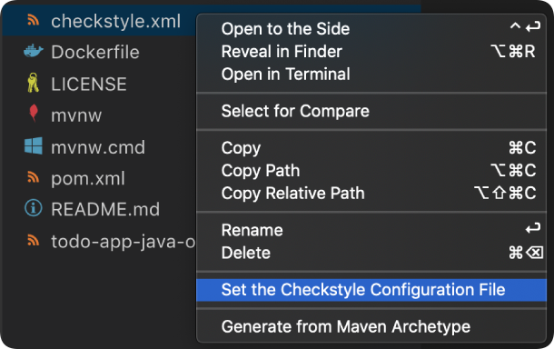
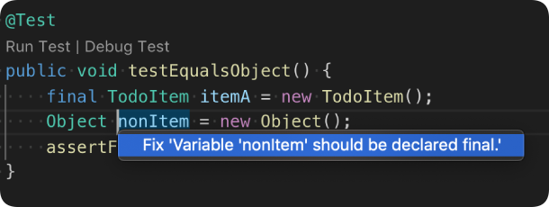
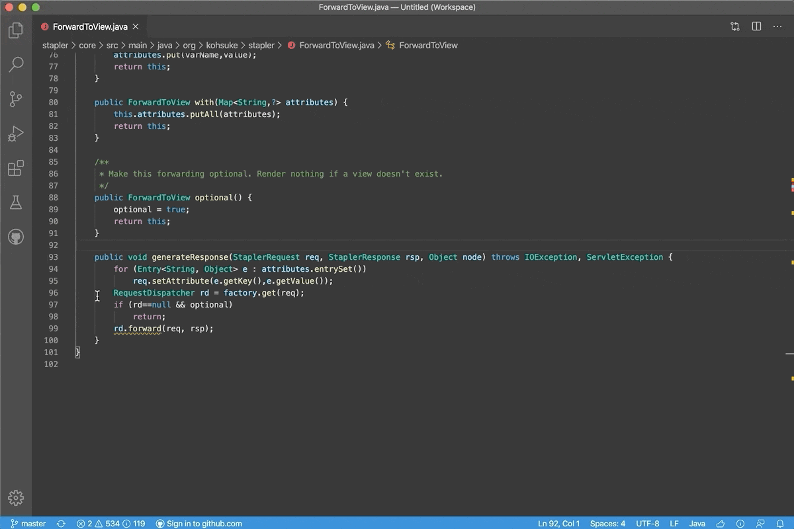
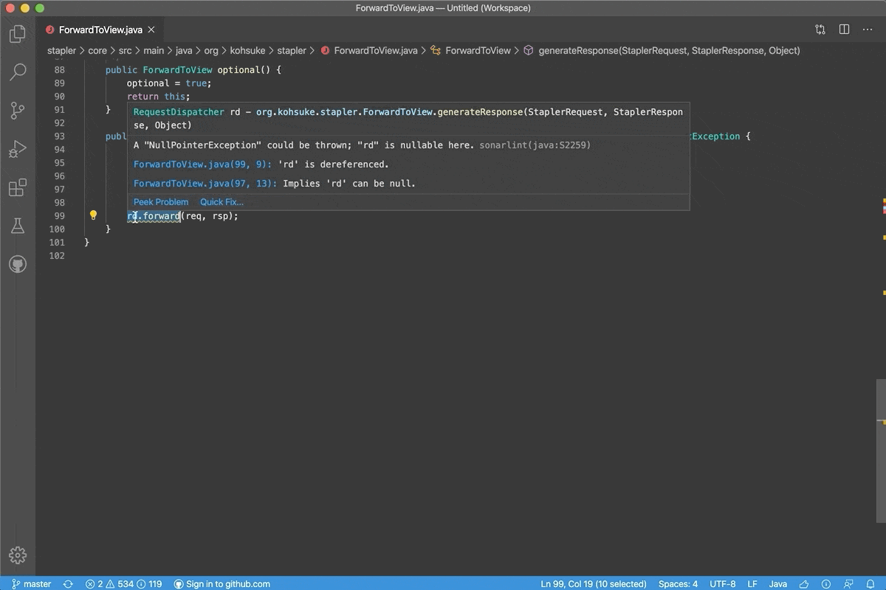

Java formatting and linting
Language Support for Java(TM) by Red Hat also provides formatting settings. You can export an Eclipse formatter file and then use it for your project in VS Code.
In addition, there are also the Checkstyle for Java and SonarLint extensions, which provide features for live linting and code analysis.
Checkstyle
With the Checkstyle for Java extension, you can use either existing checkstyle configurations (Google's or Sun's Check) or your own customized files for your project. When editing a Java file, the extension will check the file format and provide Quick Fixes if possible on the fly.
Set Checkstyle configuration file.
The Checkstyle for Java extension supports live linting.
And batch check.
The Problems panel will open when you click the Checkstyle status icon in the Status bar.
Set Checkstyle configuration file

To set the configuration file, right-click the
.xmlfile and select Set the Checkstyle Configuration File.You can also trigger the command Checkstyle: Set Checkstyle Configuration File to choose the configuration file in the File Explorer. The extension looks for a
checkstyle.xmlfile in your workspace to make Checkstyle configuration easier. You will also see the two built-in configurations:- Google's Check
- Sun's Check
Command Checkstyle: Set the Checkstyle Configuration detects potential Checkstyle configuration files and lists them. You can also provide a configuration file by directly writing a URL in the input box.
You can also set the Checkstyle version by using the command Checkstyle: Set the Checkstyle Version.
The command will:
- List the latest Checkstyle version from the main repo.
- List all the downloaded versions.
- List all the supported versions.
- Mark the currently used version with a check symbol.
In addition, you can also bring any 3rd-party modules for Checkstyle by configuring its path. For example, after using the configuration below, you can add <module name="SingleBreakOrContinueCheck"/> or <module name="com.github.sevntu.checkstyle.checks.naming.SingleBreakOrContinueCheck"/> to checkstyle.xml to leverage those checks.
"java.checkstyle.modules": [ "${workspaceFolder}/src/main/resources/sevntu-checks-1.35.0.jar" ]
Check the style and fix the violations

- When editing a Java file, the extension will check the file format and provide Quick Fixes if possible. You can click the lightbulb button in the editor to show the available Quick Fixes.
For more details about Checkstyle for Java, visit its GitHub Repository.
SonarLint
The SonarLint extension lets you detect bugs and vulnerabilities as you write code in VS Code. Java is one of the languages supported, and the extension will run in the background and highlight source code that poses a quality or security concern.
Code Analysis on the fly
Issues are highlighted directly in the editor with hovers to provide detailed explanations.

Issues found in the opened file can also be reviewed through the Problems panel of VS Code. When applicable, secondary code locations are mentioned so you can understand where the issue originates from (for example, the code path that led to a bug).
Rule documentation and remediation guidance
For any issue detected, SonarLint provides full documentation about the rule that was violated, and the coding best practice it relates to. This lets you understand why an issue is raised, and most importantly how to best fix it.

Enabling more quality and security rules
By default, SonarLint provides a wide array of rules to detect bugs and vulnerabilities. More checks can be enabled through the SonarLint Rules view.

For more details about the SonarLint for VS Code extension, visit the SonarLint website.
Formatter
Currently, you need an Eclipse formatter file like Google Style.
Set the following property:
"java.format.settings.url": "https://raw.githubusercontent.com/google/styleguide/gh-pages/eclipse-java-google-style.xml",
The property can point to a URL or a local file path.
If the formatter XML file contains more than one profile, you can set the profile name:
"java.format.settings.profile": "GoogleStyle",
You can also define the formatting preferences in your project's .settings/org.eclipse.jdt.core.prefs. It will override the global formatting settings.
We are working on a solution to allow editing your formatting preferences from within VS Code. For now, the best way to edit them is to use Eclipse. See Formatter Settings for details.